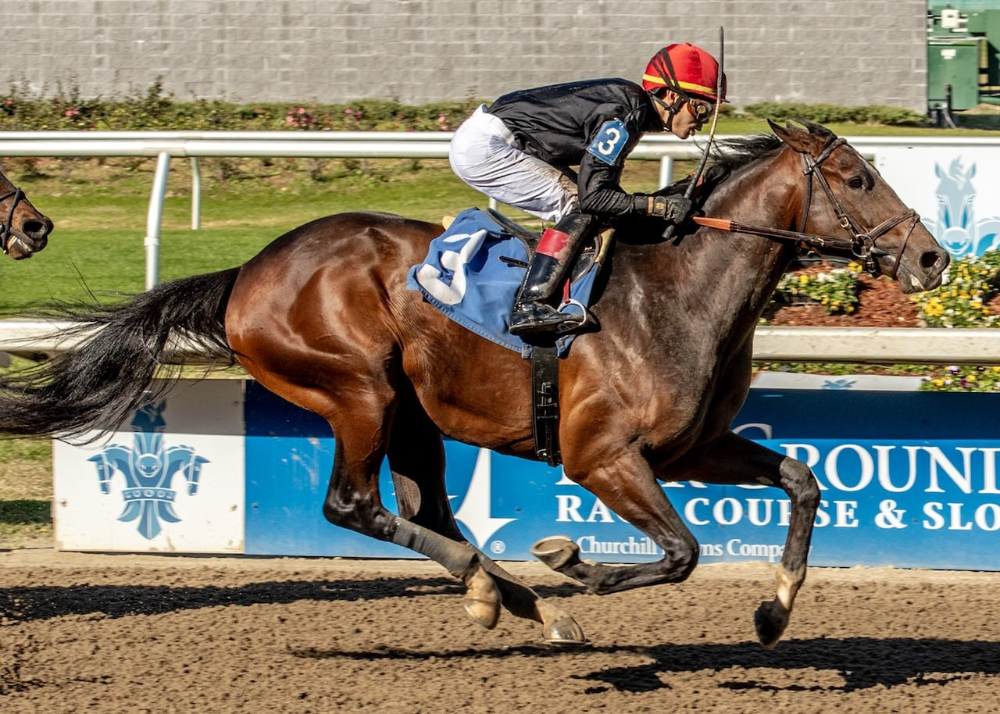

Golden Tempo gana el Kentucky Derby 152 y Cherie DeVaux entra en la historia
Golden Tempo se proclamó este sábado vencedor de la 152ª edición del Kentucky Derby disputada en Churchill Downs (Louisville, Kentucky). El potro de tres años, montado por Jose Ortiz y entrenado por Cherie DeVaux, se impuso por una largura tras una remontada en la recta final, dejando segundo al favorito Renegade y…

Golden Tempo se proclamó este sábado vencedor de la 152ª edición del Kentucky Derby disputada en Churchill Downs (Louisville, Kentucky). El potro de tres años, montado por Jose Ortiz y entrenado por Cherie DeVaux, se impuso por una largura tras una remontada en la recta final, dejando segundo al favorito Renegade y tercero a Ocelli en una prueba que reparte cinco millones de dólares y que convierte a DeVaux en la primera mujer en ganar el Run for the Roses como entrenadora.
El desarrollo de la carrera
La 152ª edición del Derby reunió finalmente a 18 ejemplares en cajones, dos menos que el campo previsto de veinte. El programa sufrió dos bajas significativas: The Puma fue retirado menos de doce horas antes de la prueba por una pierna inflamada a causa de una infección cutánea, y Great White, ejemplar de gran alzada, se encabritó y volcó hacia atrás durante el embarque, derribando a su jinete Alex Achard y obligando a su retirada de última hora. El incidente provocó un retraso de unos once minutos sobre la hora oficial de salida, fijada para las 18:57 hora de la costa este (00:57 hora peninsular española).
Una vez puestos en pista, Golden Tempo, ofrecido en la pizarra a 23 a 1, completó las diez furlongs (un cuarto de milla) en un final de remontada para superar al favorito Renegade en la última furlong y vencer por un margen de una largura. Renegade, cotizado a 5 a 1 por la mañana y partido desde el dorsal número uno —una posición de la que no salía un ganador del Derby en cuatro décadas—, mantuvo su condición de primer animal de la pizarra en el papel pero no pudo cerrar la prueba en cabeza. Ocelli completó el cajetín de honor en tercer puesto, y Chief Wallabee finalizó cuarto.
El hito histórico de Cherie DeVaux
La victoria del binomio Golden Tempo–Jose Ortiz inscribe en el palmarés del Derby el primer triunfo de una entrenadora femenina en los 152 años de historia de la prueba. Cherie DeVaux, instalada en su base de Kentucky, se había labrado en los últimos años una reputación creciente en circuitos americanos con potrancas y potros de calidad, pero hasta ayer ninguna mujer había logrado conducir a un caballo de tres años hasta la línea de meta del Derby como vencedora desde el rol de preparadora.
DeVaux entrenó esta temporada a Soaring High, hija de Curlin y de la campeona Songbird, ejemplar reaparecido el pasado viernes con victoria en el programa complementario del Kentucky Oaks. Esa actuación había puesto el foco sobre la cuadra de DeVaux apenas un día antes de que Golden Tempo le diera el triunfo más importante de su trayectoria.
Asistencia, premio y contexto deportivo
La organización cifró la asistencia oficial al hipódromo en 150.415 espectadores, en línea con los registros de las últimas ediciones. El premio total de cinco millones de dólares se mantiene por tercer año consecutivo en la cifra que igualó el récord histórico de la prueba en 2024 y 2025. Al ganador le corresponden 3,1 millones de dólares de esa bolsa.
Con su triunfo, Golden Tempo abre una nueva temporada de la Triple Corona estadounidense que continuará el 16 de mayo en las Preakness Stakes (Pimlico, Maryland) y se cerrará el 6 de junio con las Belmont Stakes (Saratoga, Nueva York, sede provisional mientras Belmont Park está en obras).
— Redacción de Galope al Día